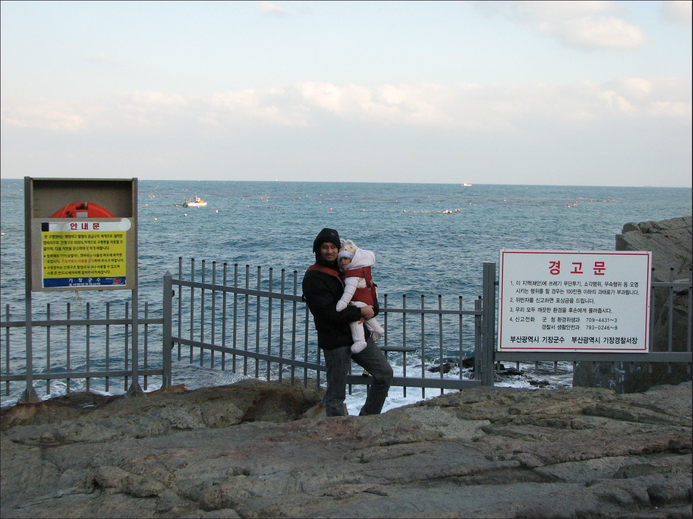
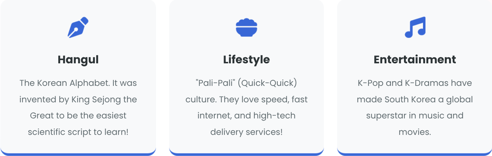
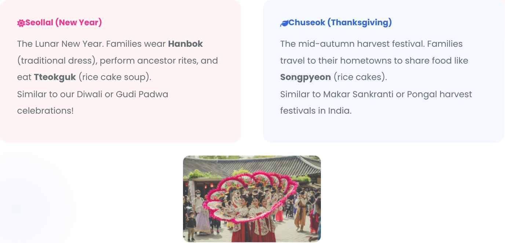
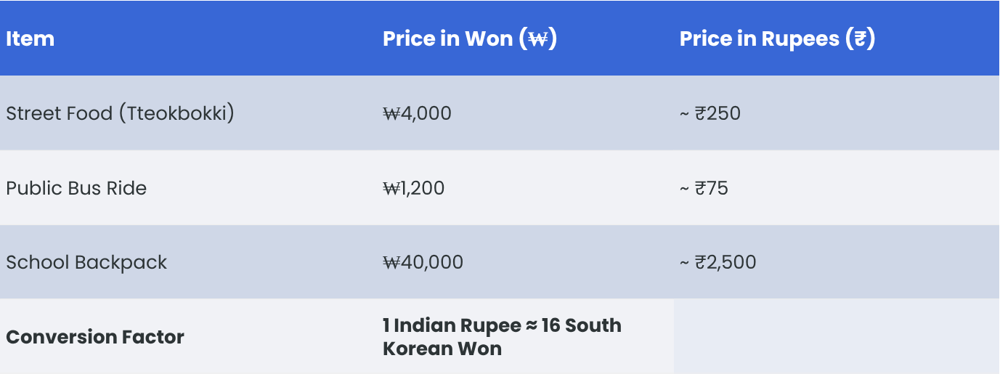
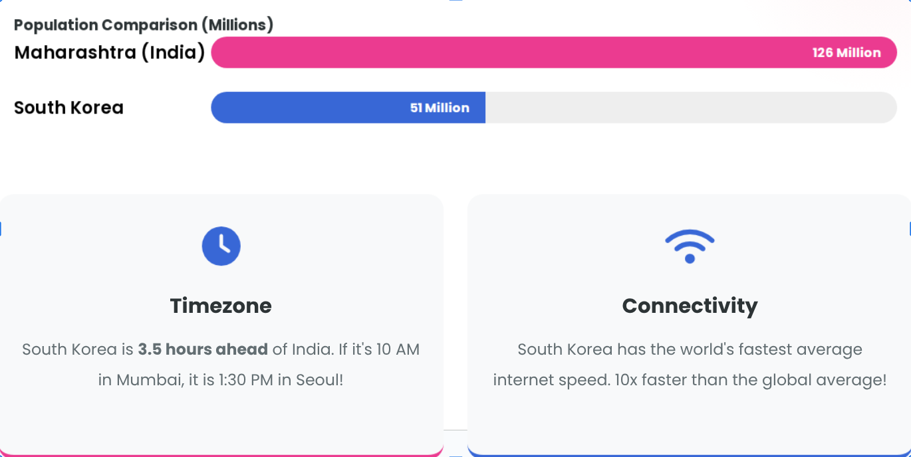
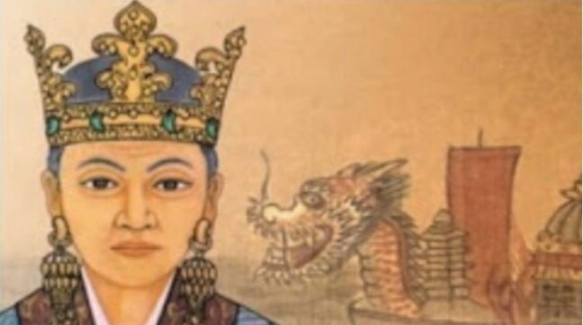

South Korea
A Journey from Ancient History to a High-Tech Future
Meet your Guide
Geography
- The Location: South Korea is located on a peninsula in East Asia. A peninsula is land surrounded by water on 3 sides!
- Neighbors: North Korea is to the North, China to the West, and Japan to the East.
- Terrain: 70% of the country is mountainous. Unlike Maharashtra's Sahyadris, these mountains get heavy snow in winter!

A Brief History
- 1910 - 1945
Japanese Occupation. A period of struggle and bravery for independence.
- 1950 - 1953
Korean War. The country was divided into North and South.
- 1960 - 1990
Rapid Economic Growth. They focused on education and manufacturing.
- 2024+
Global Tech Leader. K-Pop, Samsung, LG, and World-class Robotics.
The miracle on the Han river
From Poverty to Prosperity
In the 1950s, South Korea was poorer than many African and Asian nations. Today, it is one of the world's richest economies.
How did they do it?
By investing in education and the "can-do" spirit (called the Saemaul Undong movement). They built companies like Samsung, LG and Kia from scratch!
Lesson: Hard work and education can transform a nation.

Culture & Language
Major Festivals
Schooling: Hagwons
A Student's Busy Life
- Long Hours: Korean students often study from 8 AM to 4 PM in school, then go to private academies.
- Hagwons: These are private tuition centers. Many students stay there until 10 PM!
- Discipline: Respect for teachers and parents is the #1 rule in Korean culture.
- Just like Indian students attend coaching classes for competitive exams!

Math: Currency & Money
Math: Population & Time
The India Connection
Princess of Ayodhya
Did you know? Legend says that a Princess from Ayodhya (India) traveled to Korea in 48 AD and became the first Queen of the Geumgwan Gaya Kingdom.
Her name was Suriratna, known in Korea as Queen Heo Hwang-ok. Millions of Koreans today trace their DNA back to her!

My photos